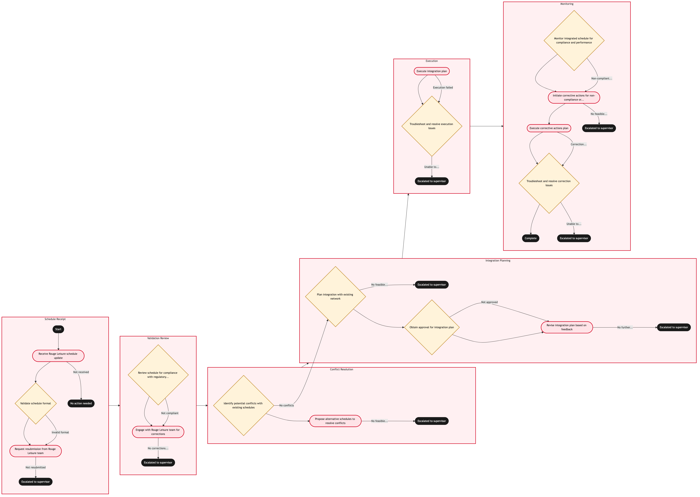

Updated 2026-08-20
Rouge Leisure Schedule Integration
Process flow
Click to zoom

Process steps
▼
Phase 1 — Schedule Receipt
3 steps
| Step | Activity | Role | System | Input | Output | KPI | Dec | Exc | Pain point |
|---|---|---|---|---|---|---|---|---|---|
| 1.1 | Receive Rouge Leisure schedule update | Rouge Leisure Team Lead | NoneU | Rouge Leisure schedule data | Received schedule file | Time to receive and acknowledge the schedule (minutes) | N | Y | Delays in receiving schedule updates can disrupt connection reliability. |
| 1.2 | Validate schedule format | Network Planning Analyst | Lufthansa Systems NetLineB | Received schedule file | Validated schedule data | Validation time (minutes) | Y | N | Incorrect format can lead to manual corrections. |
| 1.3 | Request resubmission from Rouge Leisure team | Network Planning Analyst | NoneU | Validation failure message | Resubmitted schedule file | Time to request resubmission (minutes) | N | Y | Multiple resubmissions can delay integration. |
▼
Phase 2 — Validation & Review
2 steps
| Step | Activity | Role | System | Input | Output | KPI | Dec | Exc | Pain point |
|---|---|---|---|---|---|---|---|---|---|
| 2.1 | Review schedule for compliance with regulatory requirements | Regulatory Compliance Officer | NoneU | Validated schedule data | Compliance report | Review time (minutes) | Y | N | Non-compliance can lead to fines and operational disruptions. |
| 2.2 | Engage with Rouge Leisure team for corrections | Regulatory Compliance Officer | NoneU | Compliance report | Corrected schedule data | Time to engage and correct (minutes) | N | Y | Negotiating corrections can be time-consuming. |
▼
Phase 3 — Conflict Resolution
2 steps
| Step | Activity | Role | System | Input | Output | KPI | Dec | Exc | Pain point |
|---|---|---|---|---|---|---|---|---|---|
| 3.1 | Identify potential conflicts with existing schedules | Network Planning Analyst | Lufthansa Systems NetLineB | Compliant schedule data | Conflict report | Conflict identification time (minutes) | Y | N | Conflicts can lead to rescheduling delays. |
| 3.2 | Propose alternative schedules to resolve conflicts | Network Planning Analyst | Lufthansa Systems NetLine/PlanU | Conflict report | Alternative schedule proposals | Proposal generation time (minutes) | N | Y | Generating alternatives can be resource-intensive. |
▼
Phase 4 — Integration Planning
3 steps
| Step | Activity | Role | System | Input | Output | KPI | Dec | Exc | Pain point |
|---|---|---|---|---|---|---|---|---|---|
| 4.1 | Plan integration with existing network | Network Planning Analyst | Lufthansa Systems NetLine/PlanU | Alternative schedule proposals | Integration plan | Planning time (minutes) | Y | N | Complex integrations can lead to delays. |
| 4.2 | Obtain approval for integration plan | Network Planning Manager | NoneU | Integration plan | Approved integration plan | Approval time (minutes) | Y | N | Delays in obtaining approval can cause further delays. |
| 4.3 | Revise integration plan based on feedback | Network Planning Analyst | Lufthansa Systems NetLine/PlanU | Feedback from manager | Revised integration plan | Revision time (minutes) | N | Y | Multiple revisions can be time-consuming. |
▼
Phase 5 — Execution
2 steps
| Step | Activity | Role | System | Input | Output | KPI | Dec | Exc | Pain point |
|---|---|---|---|---|---|---|---|---|---|
| 5.1 | Execute integration plan | Network Planning Control Duty Manager | Lufthansa Systems NetLineB | Approved integration plan | Integrated schedule | Execution time (minutes) | N | Y | Technical issues during execution can cause delays. |
| 5.2 | Troubleshoot and resolve execution issues | Network Planning Control Duty Manager | Lufthansa Systems NetLineB | Integration plan with issues | Resolved integration schedule | Resolution time (minutes) | Y | N | Resolving technical issues can be resource-intensive. |
▼
Phase 6 — Monitoring
4 steps
| Step | Activity | Role | System | Input | Output | KPI | Dec | Exc | Pain point |
|---|---|---|---|---|---|---|---|---|---|
| 6.1 | Monitor integrated schedule for compliance and performance | Network Planning Analyst | Lufthansa Systems NetLineB | Integrated schedule | Compliance and performance report | Monitoring time (minutes) | Y | N | Continuous monitoring is required to ensure ongoing compliance. |
| 6.2 | Initiate corrective actions for non-compliance or performance issues | Network Planning Analyst | Lufthansa Systems NetLine/PlanU | Compliance and performance report | Corrective actions plan | Action planning time (minutes) | N | Y | Developing corrective plans can be time-consuming. |
| 6.3 | Execute corrective actions plan | Network Planning Control Duty Manager | Lufthansa Systems NetLineB | Corrective actions plan | Corrected schedule | Execution time (minutes) | N | Y | Executing corrections can lead to further delays. |
| 6.4 | Troubleshoot and resolve correction issues | Network Planning Control Duty Manager | Lufthansa Systems NetLineB | Corrective plan with issues | Final corrected schedule | Resolution time (minutes) | Y | N | Resolving correction issues can be resource-intensive. |
Swim lanes
Rouge Leisure Team Lead1.1
Network Planning Analyst1.2 1.3 3.1 3.2 4.1 4.3 6.1 6.2
Regulatory Compliance Officer2.1 2.2
Network Planning Manager4.2
Network Planning Control Duty Manager5.1 5.2 6.3 6.4
Systems touched
NoneULufthansa Systems NetLineBLufthansa Systems NetLine/PlanU
Key performance indicators
- Time to receive and acknowledge the schedule (minutes)
- Validation time (minutes)
- Time to request resubmission (minutes)
- Review time (minutes)
- Time to engage and correct (minutes)
Risks and control points
- Delays in receiving schedule updates
- Incorrect format leading to manual corrections
- Multiple resubmissions delaying integration
- Non-compliance with regulatory requirements causing fines and operational disruptions
- Complex integrations leading to delays
Air Canada Process Wiki — process and systems reference compiled from public sources
for IT Application Management and User Support pre-sales discovery.
Built 2026-08-20. Every system carries an evidence tier: tier C is an industry pattern and tier U is an open
question, and neither should be asserted as fact about Air Canada without confirmation in discovery.
Not affiliated with or endorsed by Air Canada. Air Canada, Aeroplan and Altitude are trademarks of Air Canada.